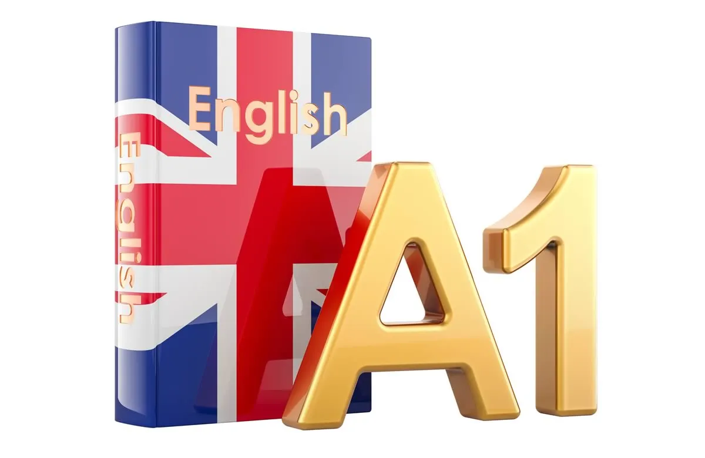
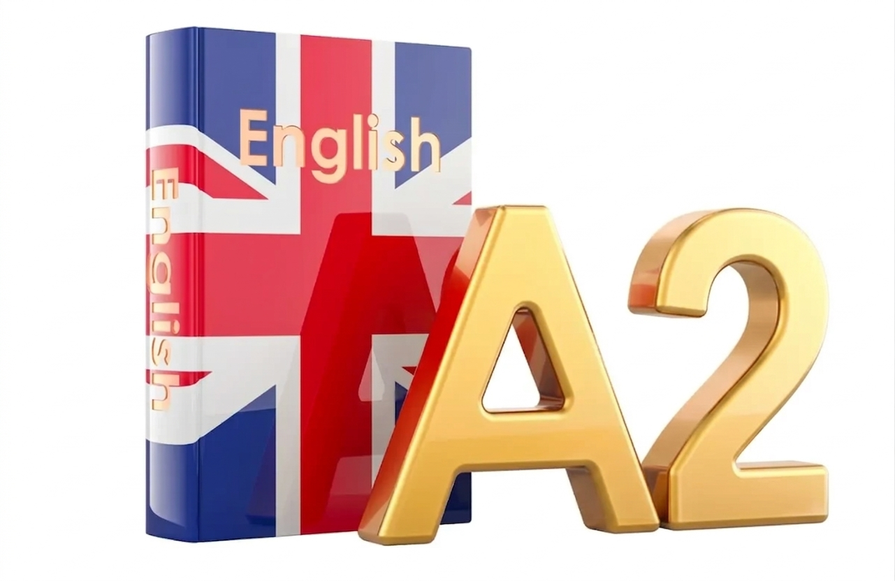
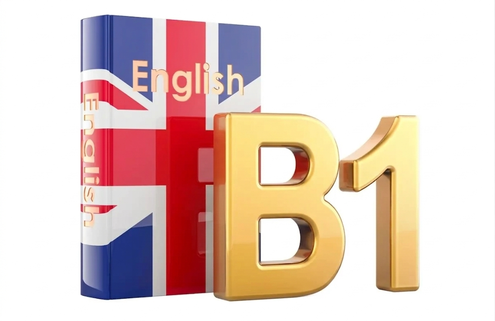
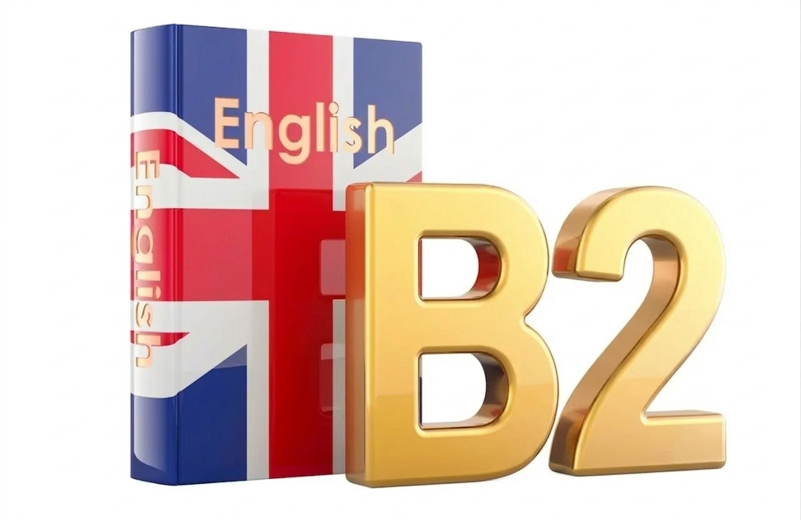
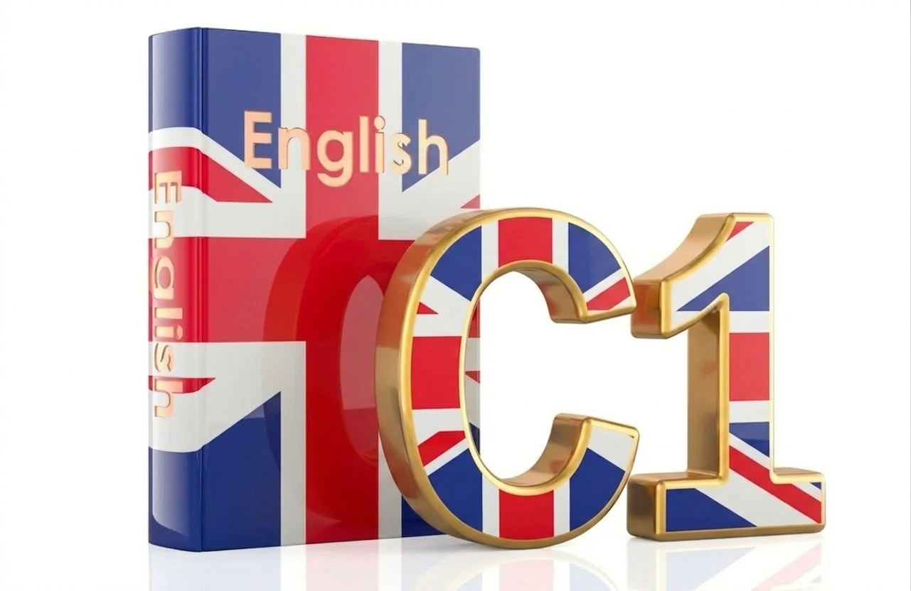
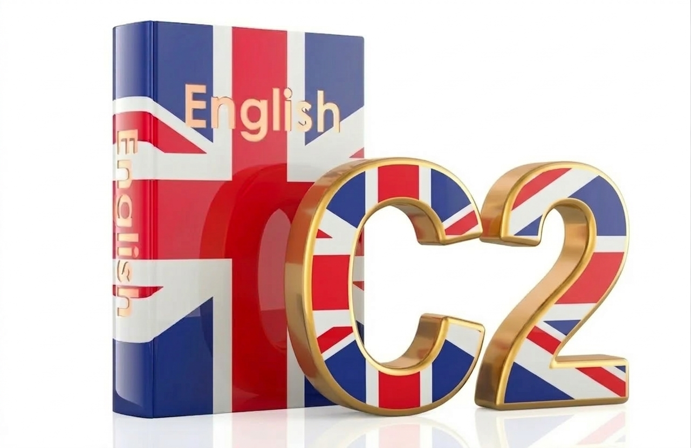

Descubre nuestros niveles de inglés diseñados para todos los niveles de habilidad.

Al terminar este nivel podrás comprender y utilizar expresiones cotidianas. Al finalizar el curso podrás: presentarte a ti mismo y a otros, pedir y dar información personal como: me llamo… vivo en… estudio… trabajo en… En este nivel también podrás presentar a las personas que conoces como: ella es mi amiga… él es mi hermano. De igual manera conocerás los colores, los días de la semana, las cosas de la casa por ejemplo la sala, la cocina, el comedor, el salón de clase, la comida, etc.

Al finalizar A2 podrás presentar a tu familia, como a tu padre y tus hermanos. Al finalizar el curso podrás: hablar de compras como: preguntar cuánto cuesta, dónde encuentro tal cosa, de qué tamaño es. Conocer los lugares de la ciudad, el cine, el teatro, el restaurante, y las profesiones. Sabrás comunicar la hora y lo que hay y no hay, por ejemplo… hay mucho café, no hay azúcar. Hablarás de tu pasado y tu entorno: a dónde fuiste ayer, qué comiste, también podrás decir que compraste un vestido o cené con mi familia anoche, así como hablar sobre el futuro y lo que planeas realizar por ejemplo; voy a salir con mis amigos o vamos a ir al cine. Terminando el nivel A2 podrás obtener tu primera certificación KET.

En estos niveles podrás hablar de situaciones de trabajo y de estudio. Al finalizar el curso podrás desenvolverte durante un viaje podrás: preguntar dónde se ubica el supermercado, la plaza, el cine etc. Sabrás comunicar necesidades, por ejemplo: necesito mi pasaporte o mis boletos son de ida y vuelta. Serás capaz de escribir textos sencillos como una carta personal. Podrás hablar de tus planes como lo que piensas hacer el fin de semana, la ropa que te vas a poner, si planeas ir a la playa, al teatro y a dónde te gustaría ir de vacaciones. Terminando el nivel B1 podrás obtener tu certificado PET y ya eres candidato para presentar un IELTS (en caso de migración).

Upper Intermediate

Este nivel te permitirá graduarte de las mejores universidades en México y el mundo a nivel maestría. Al finalizar el curso podrás: escribir textos claros, estudiar la voz pasiva y los usos avanzados del idioma. Concluyendo el nivel tendrás mayores oportunidades para certificarte, podrás presentar un CAE que te servirá para currículum y para ingresar al CELTA. El CELTA es un curso teórico y práctico para maestros de inglés con el cual podrás trabajar en cualquier país desarrollando esta profesión. De igual manera puedes presentar un IELTS obteniendo un nivel mucho más avanzado y profesional.

Mastery
En Global English, nos enfocamos en que tu aprendizaje sea natural y efectivo.